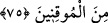

75. Böylece biz, kesin îman edenlerden olması için İbrahim’e göklerin ve yerin
melekûtunu gösteriyorduk.
“Böylece biz İbrahim’e göklerin ve yerin melekûtunu” Hak Teâlâ ‘nın rubûbiyetini,
göklerin ve yerin içindekilerle birlikte yegâne sahibi oluşunu, bu ikisindeki kahir
üstünlüğünü, göklerin ve yerin yegâne Rabbi oluşunu “gösteriyorduk.” Biz ona ancak
böylesine muazzam hakikatleri gösteriyorduk, bundan ednâ (basit şeyleri) değil.
“Melekût”, Cenab-ı Hakk’ın büyüklüğünü, yüce kudretini mübâlağa ile ifade etmek
üzere ceberût vezninde bir masdardır. Bu takdirde “melekût” un anlamı “Azamet sahibi
melik ve kahredici sultan.” demektir.
(Bunun hükümranlığı yüce olan) Allah’ın mülküne mahsus olması en uygundur.
Âyette geçen “göstermek”, göz ile görmekten türemiştir. Ancak bilmek (ma’rifet) ve
basîret ile görmekten kinayedir. Yani, ona tanıttık, basîretine açtık demektir.
“Basîretle görmek, baş gözüyle görmek gibi bütün muvahhid mü’minler için vardır.
Hz. İbrahim’e bir lütuf olarak verildiğinin belirtilmesi buna ters düşmez mi?” denilirse
cevaben deriz ki: Rabbâniyet delilinin aslını bilseler de bu âlemdeki varlıkların
cinslerine, türlerine, şahıslarına ve hallerine göre her birindeki Allah Teâlâ’nın
hikmetinin eserlerine ayrı ayrı muttali olabilmek ancak peygamberlerin ulularına
mahsusdur. Bu sebeple Rasûlullah (s.a.) duasında: “Bana eşyâyı olduğu gibi göster!”
derdi.
et-Te’vilâtü’n-necmiyye’de şöyle denilmiştir: “Bil ki, bu âlemdeki her şeyin bir
zahiri vardır. Bazen o cismânî varlık diye ifade edilir. Uzunluk, genişlik ve derinlikten
ibâret olup üç boyutludur. Bir yer tutar, bölünmeyi ve parçalanmayı kabul eder. Beş
duyu ile hissetmeye yakın olması sebebiyle bazen ona “dünya” denir. Şekil değiştirmeyi
kabul etmesi ve beş duyu ile idrak edilmesi sebebiyle bazen “sûret” denir. Duyularla
müşâhade edilmesinden dolayı bazen “şehâdet” denir. Bazen de, mülk edinilmesi ve
onda duyularla tasarrufta bulunulması sebebiyle, “mülk” denir.
Bu âlemdeki her şeyin bir de bâtını vardır. Buna da bazen üç boyutlu olmadığı, bir yer
tutmadığı ve beş duyu ile parçalara ayrılamadığı için “ruhânî”, bazen sonradan
hissedilecek olması sebebiyle “âhiret”, bazen şekilsiz ve duyularla anlaşılmaktan uzak
oluşu sebebiyle “mânâ” denir. Bazen de duyularla hissedilemez olduğu için “gayb”
denir. Bazen de mülk ve sûret âlemine sahip olduğu için “melekût” denir. Çünkü mülk
melekût ile, melekût ise Hakk’ın kudretiyle ayakta durur. Nitekim Allah Teâlâ şöyle
buyurmuştur: “Yücedir O ki, her şeyin hükümranlığı O’nun elindedir ve siz O’na
döndürüleceksiniz.” (Yasin 36/83) Yani, melekût yolundan O’na döndürülürsünüz.
Melekût âlemi, Allah’dan başka hiçbir şey yokken, “ol” emri ile Allah Teâlâ’nın ilk
yarattıklarındandır. Nitekim şu âyet buna delalet eder: “Göklerin ve yerin melekûtuna
ve Allah’ın yarattığı şeylere ve ecellerinin yaklaşmış olabileceğine bak (ıp ibret al)
madılar mı? (el-A’râf 7/185)